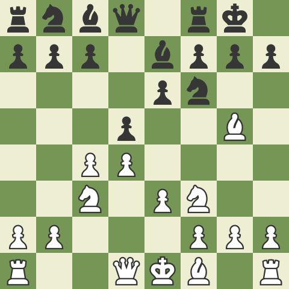

Ce este deschiderea?
Deschiderea este prima parte a jocului de sah, in care jucatorii isi aseaza piesele in modul in care vor, pentru a-si construi o pozitie avantajoasa. Totusi, nu putem face chiar ce dorim in deschidere, ci ar trebui sa respectam cateva principii, care ne ajuta sa obtinem acea pozitie avantajoasa pe care o dorim.
Un exemplu de pozitie ce respecta toate aceste principii este aceasta:
Pozitia din stanga este foarte intalnita in sah si provine din deschiderea numita ,,Gambitul Damei Refuzat"
Pentru a descoperi mai multe despre aceasta deschidere, dati click aici.Totusi, va invit sa descoperim, folosind aceasta diagrama si urmatorul quiz, principiile deschiderii.